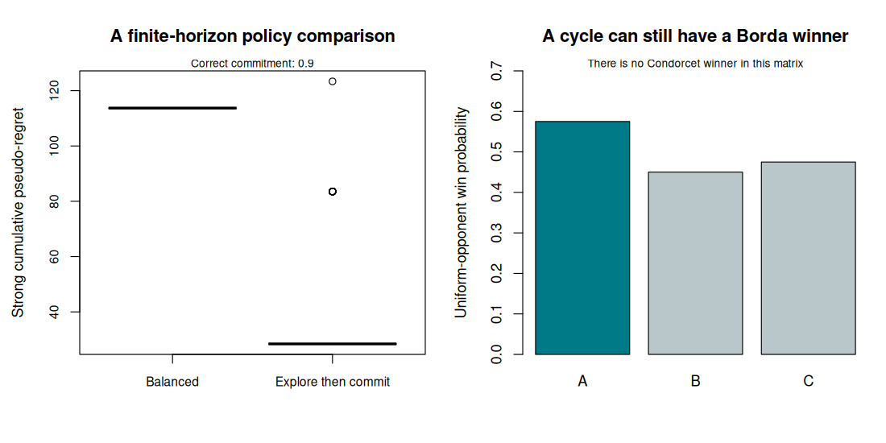

10. Duelling bandits and adaptive comparisons#
Question. Which comparison should we request next when feedback says only which alternative wins?
Preference learning describes an observation type. Online learning describes a protocol. Duelling bandits combine them: choose a pair, observe a noisy comparison, and use that information to decide what to compare or deploy next. The bridge is useful for recommendation, evaluation, and adaptive experimental design, but it requires a precise definition of a good alternative.
This chapter specifies competing winner criteria, illustrates cycles, and develops a transparent baseline. Its experiment is deliberately small enough that every assumption and regret calculation can be inspected.
10.1 · The preference matrix#
Let \(P_{ij}\) be the probability that item \(i\) wins against \(j\). In a binary comparison model without ties,
At time \(t\), the learner selects \((I_t,J_t)\) using past comparisons and observes a Bernoulli outcome with probability \(P_{I_tJ_t}\). The basic stochastic setting assumes a fixed matrix and conditionally independent comparison noise. Repeated judges, context changes, ties, or adversarial responses require a modified model.
Bradley–Terry is a structured submodel: \(P_{ij}=\sigma(\theta_i-\theta_j)\). A unique largest strength then gives an item that beats every other with probability greater than one half. General preference matrices need not have this structure.
10.2 · Declare what winning means#
Three common targets are distinct:
Criterion |
Definition |
What it emphasizes |
|---|---|---|
Condorcet winner |
\(P_{wi}>1/2\) for every \(i\ne w\) |
Beats every opponent individually |
Borda winner |
Maximizes \(b_i=(K-1)^{-1}\sum_{j\ne i}P_{ij}\) |
Average win probability against a uniform opponent |
Copeland winner |
Maximizes the number of opponents with \(P_{ij}>1/2\) |
Number of pairwise majorities |
Borda scores depend on the opponent distribution. Uniform weighting is a target choice, not a law of preference. Copeland scores ignore the sizes of probability margins. A Condorcet winner may not exist, even though Borda or Copeland maximizers exist in a finite set.
Example 10.1 · A cycle with a Borda winner
Setup. A beats B with probability 0.75, B beats C with probability 0.65, and C beats A with probability 0.60.
Work it through. Every item loses to another, so there is no Condorcet winner. The Borda scores are \(b_A=(0.75+0.40)/2=0.575\), \(b_B=(0.25+0.65)/2=0.450\), and \(b_C=(0.60+0.35)/2=0.475\). A is the Borda winner. All three have one pairwise majority, so their Copeland scores tie.
What this shows. Saying only “find the best item” leaves the statistical target incomplete. A method justified under a Condorcet assumption cannot acquire that assumption by silently substituting the Borda winner.
10.3 · A declared regret convention#
Suppose a Condorcet winner \(w\) exists. Define gaps \(\Delta_i=P_{wi}-1/2\), with \(\Delta_w=0\). One convention for strong cumulative pseudo-regret is
The factor one half is a normalization; state it when comparing implementations. A weak-regret objective can instead use \(\min(\Delta_{I_t},\Delta_{J_t})\), which incurs zero whenever one selected item is the winner. These objectives can prefer different policies.
Self-comparisons also affect the attainable benchmark. Choosing \((w,w)\) incurs zero under Equation (10.1) but provides no new preference information. If the application forbids self-comparisons and every other item has a positive gap, the best permitted pair has positive per-round cost under this convention. The action space and benchmark must agree.
Example 10.2 · A comparison can be informative and costly
Setup. There is a Condorcet winner W with \(P_{WA}=0.70\) and \(P_{WB}=0.60\).
Work it through. The gaps are \(\Delta_A=0.20\) and \(\Delta_B=0.10\). A duel between A and B has strong pseudo-regret 0.15. A duel between W and A has strong pseudo-regret 0.10 but weak regret zero. A self-comparison of W has zero regret and no information about another item.
What this shows. Estimating all comparisons well and obtaining good choices while learning are different goals. A policy that quickly stops comparing may look efficient until it commits to the wrong item.
10.4 · Connect adaptive comparison to optimal design#
For a fixed Bradley–Terry parameter, Chapter 6 derived information contributions
An estimation-oriented design can allocate comparisons to minimize uncertainty in a specified contrast or a collection of contrasts. An online policy must additionally weigh the opportunity cost of comparing inferior items. For instance, repeatedly comparing two nearly tied middle-ranked items may be useful for estimating their difference while contributing little to identifying the overall winner.
A pilot estimate can guide later allocations, but preserve sufficient graph connectivity for the desired contrasts. Greedy selection can neglect entire components. A local information criterion depends on unknown strengths and is not automatically optimal under misspecification or a different winner definition.
Adaptive sampling changes the inference argument. A correctly specified conditional likelihood can account for outcomes given predictable pair choices, but its standard errors and stopping behaviour still need an appropriate justification. A naive bootstrap of individual adaptively collected rows need not reproduce the sampling protocol. Low regret, precise final estimation, and valid inference are three separate claims.
10.5 · A transparent explore-then-commit baseline#
The lab uses a fixed Bradley–Terry matrix with a unique Condorcet winner. During a balanced pilot, every pair is compared equally often. It estimates each item’s average win frequency and selects the largest. Under Bradley–Terry, the highest strength is also the unique Borda maximizer, so this selection rule is aligned with the intended winner in this specific model.
After the pilot, the policy commits to self-comparing the selected item. A baseline continues balanced comparisons throughout. The code calculates strong pseudo-regret from the known simulated matrix and records whether the selected item is correct. Those probabilities are available to the evaluator, not to the learning rule.
This baseline is not asserted to be regret-optimal. With a fixed pilot and nonzero probability of a wrong commitment, extending the horizon indefinitely can produce linear expected regret. More sophisticated duelling algorithms continue collecting targeted evidence and require their own assumptions and analyses. The separate cyclic example demonstrates why the Condorcet regret target cannot simply be carried over to every matrix.
Code
# Chapter 10: winner definitions, cycles, and a transparent duelling policy.
set.seed(2026102110)
options(width = 100)
theta <- c(-.8, -.3, 0, .4, .9)
K <- length(theta)
P <- plogis(outer(theta, theta, "-"))
condorcet <- function(P) {
which(vapply(seq_len(nrow(P)), function(i) all(P[i, -i] > .5), logical(1)))
}
borda <- function(P) (rowSums(P) - diag(P)) / (ncol(P) - 1)
winner <- condorcet(P)
stopifnot(length(winner) == 1L)
delta <- P[winner, ] - .5
pairs <- t(combn(seq_len(K), 2))
T <- 600L
explore <- 150L # Multiple of the number of pairs, so exploration is balanced.
B <- 150L
out <- matrix(NA_real_, B, 3, dimnames = list(NULL,
c("balanced_regret", "explore_commit_regret", "selected_correctly")))
for (b in seq_len(B)) {
wins <- matrix(0, K, K)
trials <- matrix(0, K, K)
balanced_regret <- explore_regret <- 0
selected <- NA_integer_
for (t in seq_len(T)) {
pair <- pairs[(t - 1L) %% nrow(pairs) + 1L, ]
i <- pair[1]; j <- pair[2]
round_regret <- (delta[i] + delta[j]) / 2
balanced_regret <- balanced_regret + round_regret
if (t <= explore) {
y <- rbinom(1, 1, P[i, j])
wins[i, j] <- wins[i, j] + y
wins[j, i] <- wins[j, i] + 1 - y
trials[i, j] <- trials[i, j] + 1
trials[j, i] <- trials[j, i] + 1
explore_regret <- explore_regret + round_regret
if (t == explore) selected <- which.max(rowSums(wins) / rowSums(trials))
} else {
# Commit to (selected, selected): no informative comparison is collected.
explore_regret <- explore_regret + delta[selected]
}
}
out[b, ] <- c(balanced_regret, explore_regret, selected == winner)
}
cat("Bradley-Terry preference matrix:\n")
print(round(P, 3))
cat("Condorcet winner:", winner, "\n")
cat("Borda scores:\n"); print(round(borda(P), 3))
cat("\nStrong pseudo-regret uses half the sum of the two winner gaps:\n")
print(round(rbind(mean = colMeans(out), mcse = apply(out, 2, sd) / sqrt(B)), 4))
cat("Explore-then-commit is a teaching baseline, not a claim of optimal regret.\n")
cycle <- matrix(.5, 3, 3)
cycle[1, 2] <- .75; cycle[2, 1] <- .25
cycle[2, 3] <- .65; cycle[3, 2] <- .35
cycle[3, 1] <- .60; cycle[1, 3] <- .40
cat("\nA cyclic matrix (row item beats column item):\n")
print(cycle)
cat("Condorcet winners:", if (length(condorcet(cycle))) condorcet(cycle) else "none", "\n")
cat("Borda scores and Borda winner:\n")
print(borda(cycle)); print(which.max(borda(cycle)))
cat("A Condorcet-regret target is unavailable for this cyclic example.\n")
figure_dir <- Sys.getenv("COURSE_FIGURE_DIR", "")
if (nzchar(figure_dir)) {
dir.create(figure_dir, recursive = TRUE, showWarnings = FALSE)
png(file.path(figure_dir, "10-duelling-bandits.png"),
width = 1100, height = 550, res = 110)
par(mfrow = c(1, 2), mar = c(5, 4.5, 4, 1))
boxplot(as.data.frame(out[, 1:2]), names = c("Balanced", "Explore then commit"),
col = c("#A6D4D7", "#DBAACB"), ylab = "Strong cumulative pseudo-regret",
main = "A finite-horizon policy comparison", cex.axis = .85)
mtext(paste("Correct commitment:", round(mean(out[, 3]), 3)), side = 3, cex = .75)
barplot(borda(cycle), names.arg = c("A", "B", "C"),
col = c("#007A87", "#B9C7CA", "#B9C7CA"), ylim = c(0, .7),
ylab = "Uniform-opponent win probability", main = "A cycle can still have a Borda winner")
mtext("There is no Condorcet winner in this matrix", side = 3, cex = .75)
invisible(dev.off())
}
Output
Bradley-Terry preference matrix:
[,1] [,2] [,3] [,4] [,5]
[1,] 0.500 0.378 0.310 0.231 0.154
[2,] 0.622 0.500 0.426 0.332 0.231
[3,] 0.690 0.574 0.500 0.401 0.289
[4,] 0.769 0.668 0.599 0.500 0.378
[5,] 0.846 0.769 0.711 0.622 0.500
Condorcet winner: 5
Borda scores:
[1] 0.268 0.403 0.489 0.603 0.737
Strong pseudo-regret uses half the sum of the two winner gaps:
balanced_regret explore_commit_regret selected_correctly
mean 113.6962 34.2002 0.9000
mcse 0.0000 1.4427 0.0246
Explore-then-commit is a teaching baseline, not a claim of optimal regret.
A cyclic matrix (row item beats column item):
[,1] [,2] [,3]
[1,] 0.50 0.75 0.40
[2,] 0.25 0.50 0.65
[3,] 0.60 0.35 0.50
Condorcet winners: none
Borda scores and Borda winner:
[1] 0.575 0.450 0.475
[1] 1
A Condorcet-regret target is unavailable for this cyclic example.


10.6 · Exercises#
Verify the three winner criteria in Example 10.1. Define a weighted opponent score \(b_i(q)=\sum_{j\ne i}q_jP_{ij}/(1-q_i)\) for positive weights summing to one. Use \(q=(0.90,0.05,0.05)\) to show that its maximizer can differ from the uniform-opponent Borda winner.
Derive the strong and weak regret of the three duels in Example 10.2. Explain why comparing the winner against itself is a modelling convention that may not match every application.
Vary the pilot length while keeping the horizon fixed. Report regret, correct selection frequency, and Monte Carlo uncertainty. Explain why no single pilot length must be best across all gap configurations.
Design a study whose goal is a confidence interval for one preference contrast rather than cumulative reward. Specify the contrast, budget, comparison allocation, and the inference assumptions that an adaptive version would need.
Worked solutions
1. Each item wins one majority and loses one, so Condorcet fails and Copeland ties. The stated Borda means select A. Under the specified weights, the scores become \(0.575\), \(0.271\), and \(0.587\), so C maximizes the new target. Each denominator conditions the opponent distribution on excluding the item itself. Changing the weighting changes what “average” means; it is an explicit change of target.
2. For A versus B, the strong regret is 0.15 and the weak regret is 0.10. For W versus A, they are 0.10 and 0. Self-comparing W makes both zero. An interface requiring two distinct displayed items needs a benchmark respecting that restriction.
3. A longer pilot leaves fewer rounds for exploitation but can lower the probability of committing incorrectly. Smaller gaps can make the identification problem harder while reducing the cost of mistakes. Keep the pilot budget divisible by the number of pairs if retaining exactly balanced exploration.
4. For a fixed design, a contrast-specific information criterion supplies one defensible allocation objective. For an adaptive design, record pair-choice probabilities or the full selection rule, stopping decisions, and independent sampling units; justify the interval under that protocol. Reusing a fixed-design Wald formula is not itself a justification.
Reading and transition#
Yue, Broder, Kleinberg, and Joachims (2012) develops the K-armed duelling-bandit problem. The Bandit Algorithms text supplies the surrounding sequential-decision framework. The next block asks what inferential claims remain valid after the same data help select the question to be tested.